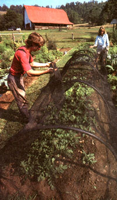
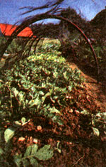

Protect summer crops from scorching sun and scavenging songbirds.
Once upon a time, an acorn plunked Chicken Little on the head, convincing the skittish hen that the entire sky was falling. As a gardener, I can empathize with that feathered paranoiac. When a hot July sun shrivels up tender greens or flying thieves ransack the fruits I nursed from seedhood, I, too, feel like the sky may be tumbling down upon all my gardening efforts. Our fabled chicken covered her head with tiny wings. Fortunately, we can use better shields-shade and bird nettings. They are, indeed, wonderful panaceas for two of summer's most common gardening headaches.
Shade Netting
I understand the reluctance of most growers to intentionally exclude sunlight with a shade netting-we've all read over and over how important it is for crops to get enough sun. But there are times when parts of any garden, except in areas with the coolest summers, could benefit from a bit of extra shade.
Consider some examples. Perhaps you've dreamed of a picture-book fall garden, but were brought back to reality when sunburned broccoli seedlings gave up the ghost. Maybe you've wished you could still enjoy fresh lettuce when the tomatoes ripen in July. Or you might wonder what to do about an August carrot sowing that never sprouted due to lack of moisture and drying winds.
Let shade cloth come to the rescue.
Inventive gardeners have made shade for years using window screening, onion bags, snow fencing and taller plants, but now the highly effective nettings that have long been in commercial use are available for home growers, as well. Woven from polypropylene or saran, this black, green or clear material buffers the brunt of the sun's rays and helps cool the air (much as window screens do in your home). As a bonus, shade cloth also slows the force of drying winds.
Fifty percent shade netting cuts the sun's intensity by half and has a multitude of uses. You can set it over newly set-out transplants to slow photosynthesis for a few days. This will put less of a strain on roots which have enough to do settling into a new home without supporting a burst of new growth. Used over direct-sown seeds, shade cloth helps keep the soil moist (even 1/2 inch of dry soil can mean death to newly germinated plants) and slows the rate of transpiration (water loss) from those tiny new leaves. Some gardeners lay boards or fabrics such as burlap on top of newly sown rows for this same purpose, but that practice may promote disease, encourage slugs and actually wick moisture from the ground. And while it's true that solid cloth suspended above seedbeds won't cause those problems, you'd have to remove that light blocker just as soon as the plants germinate.
You can also try using 50% shade cloth to persuade quick-bolting plants like lettuce and spinach to keep growing into the summer, but 10% to 30% netting works better for this purpose. The more open material allows enough sunlight to penetrate so that the plants don't easily become leggy. Even so, you'll want to pull the cover over your crops only during the hottest hours, say from 10 o'clock in the morning until four or five in the afternoon. One drawback: The lower percentage netting is harder to locate.
In what seems like a contradiction in terms, shade cloth can also help protect from frost. On a tip from David Duhon (author of One Circle: How to Grow a Complete Diet in Less Than 1,000 Square Feet), we tried laying 50% shade cloth right on top of last fall's lettuce on cold nights. Sure enough, that frost shield enabled us to hold onto our salad bed until December.
Although mature plants (like our fall lettuce) may be stout enough to support a shade cloth, most often you'll need to suspend it above your plants. Roll it out over arched sections of PVC pipe, a wooden frame, or stakes that have been placed throughout the bed and along the sides. You can water shaded plants less often than normal, but when you do, first pull the netting back. Watering through shade cloth is uneven at best and downright damaging at worst-drip lines concentrate run-off at certain spots. And watch your step: The stuff is notoriously slick when folded onto itself.
Bird Netting
Bird netting doesn't aid the growth of better fruits and berries, but it does help you keep the ones you produce. Think of it as flexible fencing. Unlike crawling insects or raiding mammals, birds can zero in on their target from any angle, making a wraparound barrier your most reliable defense.
This woven polypropylene fabric (also called protective net) has larger holes than those in shade cloth and lasts from five to 10 years. (Those with ultraviolet inhibitors have the longest life expectancies.)
Used correctly, bird netting is extremely effective. Used incorrectly, it's simply a waste of time. As far as tree fruit goes, the biggest mistake (perpetuated by drawings in some of the catalogues that sell the stuff) is draping the fabric over the tree and letting it hang down the sides like a bedspread. Even a bird's brain can figure out the answer to that one: Fly up from underneath, sit in the branches, and begin dining. So gather and tie the extra material around the trunk like the wrapper on a candied apple.
When protecting small berries (or even let tuce and tomatoes), avoid draping the netting directly over the plants. Instead, place it on some sort of frame that keeps it off the plants. Birds have trouble landing in netted trees, but they can stand right next to a row of netted strawberries and peck out the morsels, or they can perch on stakes, branches and nearby bushes to attack covered blueberries.
There's no reason, then, to let scorching sunlight or hungry birds give you a Chicken Little complex ("The crops are failing! The crops are failing!"). You don't have to panic and throw up your hands. Instead, throw up some nets!
Bountiful Gardens
5798 Ridgewood Rd., Willits, CA 95490; 707/459-3390.
30% shade cloth, 8' wide, $2 per running foot. 50% shade cloth, 6' wide, $1.50 per running foot. 6' X 25' 1 "-mesh bird netting, $9, 25' X 25' 7/8" mesh bird netting, $32. Also offers useful clips and pins. Prices do not include shipping and handling charges.
W. Atlee Burpee & Co.
Warminster, PA 18974; 215/674-4915.
Bird netting: 7' X 20', $6.95 (item B-90217); 14' X 14', $8.45 (B-90399); 14' X 45', $21.95 (B-90423);14' X 75', $27.95 (B-90613); 28' X 28', $29.95 (B-91181). Add $1.50 handling charge, and 6% sales tax if you live in PA or CA.
Gardener's Supply
128 Intervale Rd., Burlington, VT 05401; 802/863-1700.
50% shade cloth, 5' X 20', $16.95 (item 9-243), with six hoops, $19.95 (9-247). Bird netting, 4' X 50', small mesh, $7.95 (5-304); 8' X 20', small mesh, $7.95 (5-305); 28' X 28', large mesh, $24.95 (5-306);14' X 14', large mesh, $7.95 (5-307); 13' X 39', large mesh, $15.95 (5-308). Prices do not include shipping and handling charges.
A.M. Leonard, Inc.
6665 Spiker Rd., Piqua, Ohio 45356; 1-800/543-8955.
A large selection of polypropylene shade cloth, providing 30%, 47% and 55% shade and from 5' to 24' wide, costing 9 cents, 11 cents and 12 cents per sq. ft., respectively. $6 customizing charge on orders under $50. Bird netting varies from 7 1/2' X 21' ($5.99) to 30' X 30' ($29.99). Shipping and handling approximately 15% of order cost.
|
 Susan and Franklin Sides use garden netting to shut out excess sun, late (or early) frosts and beaked berry bandits. |
 |
|